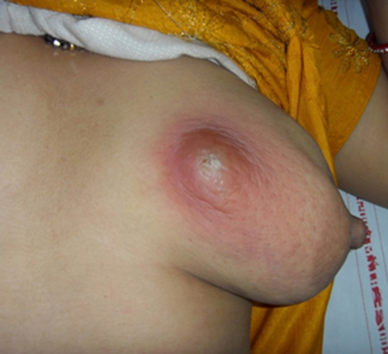

Página 7 · Tratar mastite e abscesso
Cefalexina, oxacilina, drenagem
Mastite clássica: qual antibiótico, por quanto tempo — e quando o quadro exige oxacilina ou uma incisão?
O tripé do tratamento da mastite
O tratamento da mastite tem três pernas: manter o aleitamento + analgésico / anti-inflamatório (para a dor) + antibiótico. O aleitamento não é opcional aqui — ele faz parte do tratamento (o tema da próxima página). A dor é controlada com analgésico/anti-inflamatório. E o antibiótico ataca o S. aureus.
O antibiótico ambulatorial: cefalexina
O antibiótico ambulatorial de escolha é uma cefalosporina de 1ª geração: cefalexina 500 mg de 6/6 horas, por cerca de 10 dias. Guarde a dose verbatim — 500 mg, 6/6h (quatro vezes ao dia), ~10 dias. É a mastite que se trata em casa, com a mãe voltando para reavaliação.
A discussão "em cima do muro"
Existe uma zona cinzenta que a banca explora: em casos iniciais — quando ainda é difícil separar mastite de ingurgitamento com fissura — discute-se tratar SEM antibiótico, apostando no esvaziamento e na correção da pega. É a mastite "em cima do muro", incipiente, em que nem todos entram com antibiótico de imediato.
A mastite clássica sempre entra com antibiótico
Mas atenção ao contraponto: a mastite clássica — aquela com sinal flogístico + alteração de estado geral + dor — SEMPRE entra com antibiótico. A discussão "sem antibiótico" é só para o quadro incipiente e duvidoso. Quadro fechado de mastite = antibiótico, sem hesitar.
A mastite grave: oxacilina
Na mastite grave — paciente muito comprometida, com necessidade de internação — o antibiótico é a oxacilina, o antibiótico mais forte para estafilococo. Ou seja: mastite leve/ambulatorial = cefalexina VO; mastite grave/internada = oxacilina. O degrau de gravidade troca a droga.
De onde vem a oxacilina
A referência à oxacilina como "o mais forte para estafilococo" vem da clínica médica — é o antiestafilocócico de peso que a clínica consagra para infecções graves por S. aureus. Vale como ancoragem: quando o estafilococo aperta, oxacilina.
O abscesso: a evolução da mastite não tratada
O abscesso é a evolução se a mastite não for tratada a tempo. É o terceiro degrau do espectro da mama — a infecção que se organiza em coleção purulenta. Chegou ao abscesso, mudou a conduta.
A conduta no abscesso: drenagem
No abscesso, a conduta acrescenta o passo cirúrgico: drenagem (é um abscesso de pele, drena-se como tal) + analgésico + antibiótico. A regra geral de abscesso vale aqui — coleção de pus se drena; o antibiótico e o analgésico acompanham, mas a drenagem é o que resolve a coleção.
Interativo: toque no ponto de incisão.
O "como se drena": a loja purulenta, a linha de incisão e a evacuação da coleção. O antibiótico e o analgésico acompanham, mas é a drenagem que trata a coleção. A relação da incisão com a papila liga esta página à próxima (as exceções ao aleitamento).
Mama lactante com área focal de eritema e abaulamento tenso, periareolar/lateral, com ponto esbranquiçado-amarelado na pele: pus superficializando. É o achado que separa o abscesso da mastite simples — na mastite há dor, calor e rubor, mas sem coleção definida. Aqui o relevo focal e o ponto purulento indicam coleção organizada: o raciocínio muda de "antibiótico e esvaziamento" para "confirmar coleção e drenar".
Kataria K et al., Indian J Surg 2012, Fig. 1 — PMC3900741 · © Association of Surgeons of India (uso educacional, com atribuição) · página de origem
Endometrite (genital)
Clindamicina + Gentamicina IV · internação · 48–72h afebril · alta sem manutenção.
Mastite ambulatorial
Cefalexina 500 mg 6/6h ~10 dias · + manter aleitamento + analgésico.
Mastite grave / internação
Oxacilina — o antiestafilocócico mais forte, na paciente comprometida.
Abscesso
Drenagem + analgésico + antibiótico — a drenagem é o que resolve a coleção.
Quiz — fixação
Mastite puerperal clássica, sem critério de gravidade, em manejo ambulatorial. Qual o antibiótico e o esquema?
- A) Correta. Cefalosporina de 1ª geração — cefalexina 500 mg 6/6h por ~10 dias — é a escolha ambulatorial; cobre bem o S. aureus da mastite lactacional. A dose é verbatim e cobrável.
- B) Oxacilina é para a mastite grave/internada, não para o quadro ambulatorial clássico — escala a droga sem que a gravidade justifique.
- C) Clinda + Genta é o esquema da endometrite (infecção genital polimicrobiana), não da mastite (mama, por S. aureus). Mistura os dois eixos.
- D) Amoxicilina não é a escolha padrão para o estafilococo da mastite; a cefalexina cobre melhor.
Julgue as afirmativas sobre a escalada terapêutica no eixo mamário e marque a sequência correta (V/F): I. A mastite clássica com flogose e alteração do estado geral pode ser observada sem antibiótico. II. O abscesso mamário exige drenagem, além de analgésico e antibiótico. III. Na mastite grave com necessidade de internação, a droga é a oxacilina.
- A) F – V – V. I é falsa: a mastite clássica sempre entra com antibiótico — a discussão "sem antibiótico" é só para o caso incipiente/duvidoso. II é verdadeira: abscesso é coleção de pus, drena-se. III é verdadeira: mastite grave/internada = oxacilina, o degrau de gravidade que troca a droga.
- B) Erra a I ao estender a zona cinzenta para o quadro fechado de mastite.
- C) Erra a II ao negar a drenagem do abscesso — trata coleção como celulite.
- D) Erra a III ao negar a oxacilina na grave, e a I.
A conduta está dada — mas em toda mastite e todo abscesso existe uma ordem que a banca vai tentar te fazer quebrar: a do aleitamento.